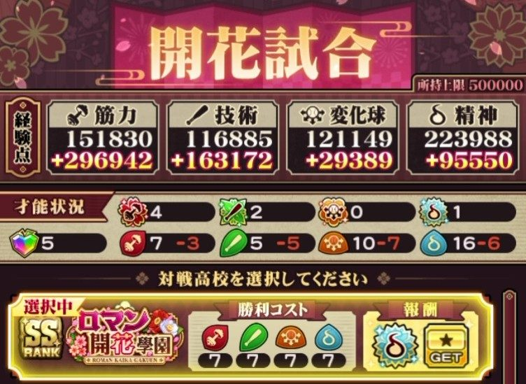
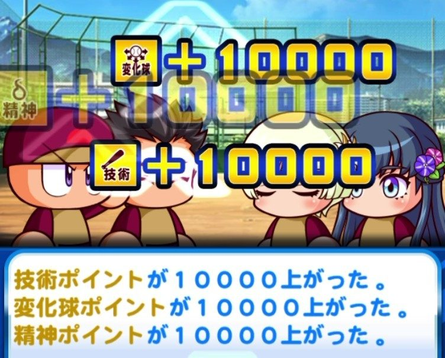

サクセス デッキ組み方（投手向け）
ロマン開花學園 デッキ組み方
どんなキャラ・ボーナスを揃えてデッキを組むとよいかをまとめます。
重要な3点
このシナリオで重要となるのは主に3点です。
- 練習効果アップ（11%以上から効果を発揮）
- スペシャルタッグボーナス（151%以上から効果発揮）
- 高校キャラをメイン＆サポートに1枚ずつ入れる
メインデッキの練習効果とタッグボーナスが高いほど、あらゆる経験点がアップします。経験点がどれだけ多く稼げるかは、8割方デッキで決まると言っても過言ではありません。
片方だけ高ければいいという訳ではなく、練習効果アップとタッグボーナスが両方高い方が有利です。
練習効果アップは10%以下では経験点アップの効果を発揮せず、スペシャルタッグボーナスも150%以下だと経験点アップの効果を発揮しません。
タッグボーナスが240%とトップクラスに高い[復活の二刀流]大谷翔平は練習効果が0のため、そこまで経験点的に有利ではありません。
最近登場している新キャラは、レベル上限開放を進めると練習効果もタッグボーナスも高くなるキャラが多いので、上限開放をどこまで進めればボーナスがどれだけ上がるか注目しましょう。
高校キャラをメイン＆サポートに1枚入れる
メインデッキに高校キャラを入れることで、セクション4でロマン開花學園と開花試合が可能になり、大量経験点と高校金特1個を獲得できます。

サポートデッキに高校キャラを入れることで、高校金特の獲得時に各種経験点を1万点獲得できます（敏捷込み）。これが6金特分なので、合計30万点獲得可能です。

アドバンテージが非常に大きいので、必ず入れましょう。高校キャラは次の3人です。
- 初白百合
- 朝顔かえで
- 大桜剛
あると嬉しいキャラクター
あると嬉しいのは主に5点です。
- 至高のスターター or 至高のリリーバー or 至高のクローザーを取れるキャラクター
- オリジナルストレート または 変化球を取れるキャラクター
- 高Lvの投手サポートキャラ
- 練習改革
- スタミナボーナス
至高金特は、オリジンランク6において大幅なパワーアップを遂げました。至高金特1個で、他の金特4個分の査定になります。
現在実装されている至高キャラは練習効果とタッグボーナスが低く、稼げる経験点が少なくなるものの、そのデメリットをもってしても採用価値がある程に金特査定が高いです。
オリジナルストレート、オリジナル変化球も強力で、経験点消費なく査定をアップする事が可能です。
現在、オリジンランク6ではオリジナルストレートの方が強い環境となっています。
高Lvの投手サポートキャラも入れたいです。オリジンランク6ではLv50のポジション一致キャラのサポートイベントで24600点獲得出来るので、かなりの経験点ソースになり得ます。
サポートイベントは1サクセス20回まで発生させる事が可能です。
練習改革は、あったら嬉しい存在です。コントロールやスタミナ練習でも変化球経験点を多く稼げるようになります。
スタミナボーナス持ちのスタミナタッグで、スタミナを直上げ出来ると経験点以上のメリットになり得ます。